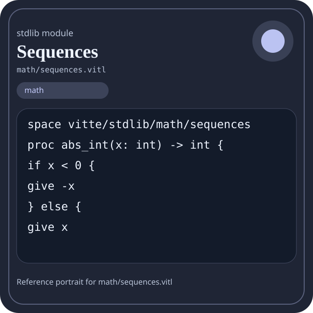

Stdlib module math/sequences.vitl
This page is a wiki-style reference for one concrete stdlib file. It explains what the file owns, where it fits in the family, and how to decide whether this is the right surface to depend on.

math/sequences.vitl.Family: math
Kind: public stdlib surface
Page style: this reference follows the same “encyclopedic card + portrait + usage contract” logic as the keyword pages, but for stdlib modules.
Summary
- Overview
- Purpose
- Taxonomy
- Implementation profile
- Top-level API inventory
- Position in family
- Declaration map
- Representative signatures
- How to use this module
- User example
- Keyword coverage
- Source shape
- Source landmarks
- Source organization
- Complete API catalog
- Integration boundaries
- Composition guidance
- Relationship table
- Neighbor modules
Overview
| Field | Value |
|---|---|
| Path | math/sequences.vitl |
| Family | math |
| Kind | public stdlib surface |
| Line count | 670 |
| Declared procedures | 56 |
| Declared forms/picks | 0 |
`math/sequences.vitl` is a public stdlib surface inside the `math` family. It should be read as one focused slice of the broader family responsibility: Arithmetic, algebra, comparison, calculus, geometry, modular arithmetic, number theory, probability, statistics, matrix, and vector helpers.
Purpose
This file should be chosen because of responsibility, not because its name “sounds close enough”. Inside the math family, it carries one focused part of the contract and keeps that responsibility separate from neighboring concerns.
- A scoring engine can compute aggregates in `math` while keeping I/O and transport elsewhere.
- A statistics or matrix chapter should explain the workflow around the computation, not just a single formula.
Taxonomy
Think of this page as a generated encyclopedia entry rather than a hand-written tutorial. The goal is to show what kind of module this is, how dense it is, and what reading strategy makes sense before depending on it.
- Large algorithm surface: this file exposes many procedures and likely acts as a domain toolkit rather than a single thin wrapper.
- Minimal top-level dependencies: the module reads as mostly self-contained from its opening declarations.
- Explicit export surface: the file ends with visible export declarations instead of relying only on implicit namespace discovery.
Implementation profile
This profile is inferred directly from the source text. It does not replace reading the file, but it tells you quickly whether the module is mostly declarative, loop-heavy, branch-heavy, or organized around many small exits.
| Signal | Count | What it suggests |
|---|---|---|
if | 47 | Branching density and local decision-making. |
while | 20 | Loop-heavy or iterative implementation style. |
for | 0 | Collection-style traversal at source level. |
match | 0 | Variant-driven branching or grammar-style decoding. |
let | 88 | Local state and intermediate value density. |
give | 102 | Number of explicit exit points and result shaping. |
Top-level API inventory
| Surface | Items |
|---|---|
| Procedures | abs_int, max_int, min_int, clamp_non_negative, pow_int, integer_sqrt, is_perfect_square, arithmetic_term, arithmetic_last, arithmetic_sum, arithmetic_mean, arithmetic_series |
| Forms | none declared at top level |
| Picks | none declared at top level |
| Constants | none declared at top level |
| Exports | * |
Imported surfaces
This file does not advertise a top-level `use` surface in its opening declarations. That often means it is either self-contained or an aggregation layer.
Position in family
This file is module 16 of 21 in the math family when ordered by path. By procedure count it ranks 9, and by line count it ranks 5. Those ranks are useful as rough signals of breadth, not as quality judgments.
Declaration map
The declaration map turns raw source into a scan-friendly catalog. It is useful when the file is large enough that a reader wants to orient by kinds of surfaces first.
| Line | Name | Kind | Role |
|---|---|---|---|
| 1 | vitte/stdlib/math/sequences | space | Declares the namespace that anchors this file in the stdlib tree. |
| 11 | abs_int | proc | Represents one top-level surface in the file contract and should be read as part of the module boundary. |
| 19 | max_int | proc | Represents one top-level surface in the file contract and should be read as part of the module boundary. |
| 27 | min_int | proc | Represents one top-level surface in the file contract and should be read as part of the module boundary. |
| 35 | clamp_non_negative | proc | Represents one top-level surface in the file contract and should be read as part of the module boundary. |
| 43 | pow_int | proc | Represents one top-level surface in the file contract and should be read as part of the module boundary. |
| 63 | integer_sqrt | proc | Represents one top-level surface in the file contract and should be read as part of the module boundary. |
| 82 | is_perfect_square | proc | Represents one top-level surface in the file contract and should be read as part of the module boundary. |
| 95 | arithmetic_term | proc | Represents one top-level surface in the file contract and should be read as part of the module boundary. |
| 102 | arithmetic_last | proc | Represents one top-level surface in the file contract and should be read as part of the module boundary. |
| 110 | arithmetic_sum | proc | Represents one top-level surface in the file contract and should be read as part of the module boundary. |
| 120 | arithmetic_mean | proc | Represents one top-level surface in the file contract and should be read as part of the module boundary. |
| 127 | arithmetic_series | proc | Represents one top-level surface in the file contract and should be read as part of the module boundary. |
| 144 | geometric_term | proc | Represents one top-level surface in the file contract and should be read as part of the module boundary. |
| 151 | geometric_last | proc | Represents one top-level surface in the file contract and should be read as part of the module boundary. |
| 159 | geometric_sum | proc | Represents one top-level surface in the file contract and should be read as part of the module boundary. |
| 174 | geometric_series | proc | Represents one top-level surface in the file contract and should be read as part of the module boundary. |
| 191 | triangular_term | proc | Represents one top-level surface in the file contract and should be read as part of the module boundary. |
| 199 | triangular_sum | proc | Represents one top-level surface in the file contract and should be read as part of the module boundary. |
| 206 | triangular_series | proc | Represents one top-level surface in the file contract and should be read as part of the module boundary. |
| 219 | is_triangular | proc | Represents one top-level surface in the file contract and should be read as part of the module boundary. |
| 227 | square_term | proc | Represents one top-level surface in the file contract and should be read as part of the module boundary. |
| 234 | square_series | proc | Represents one top-level surface in the file contract and should be read as part of the module boundary. |
| 247 | cube_term | proc | Represents one top-level surface in the file contract and should be read as part of the module boundary. |
| 254 | cube_series | proc | Represents one top-level surface in the file contract and should be read as part of the module boundary. |
| 267 | polygonal_term | proc | Represents one top-level surface in the file contract and should be read as part of the module boundary. |
| 283 | pentagonal_term | proc | Represents one top-level surface in the file contract and should be read as part of the module boundary. |
| 287 | hexagonal_term | proc | Represents one top-level surface in the file contract and should be read as part of the module boundary. |
| 291 | polygonal_series | proc | Represents one top-level surface in the file contract and should be read as part of the module boundary. |
| 308 | fibonacci_term | proc | Represents one top-level surface in the file contract and should be read as part of the module boundary. |
| 335 | fibonacci_sum | proc | Represents one top-level surface in the file contract and should be read as part of the module boundary. |
| 343 | fibonacci_series | proc | Represents one top-level surface in the file contract and should be read as part of the module boundary. |
| 356 | is_fibonacci | proc | Represents one top-level surface in the file contract and should be read as part of the module boundary. |
| 367 | lucas_term | proc | Represents one top-level surface in the file contract and should be read as part of the module boundary. |
| 394 | lucas_series | proc | Represents one top-level surface in the file contract and should be read as part of the module boundary. |
| 407 | pell_term | proc | Represents one top-level surface in the file contract and should be read as part of the module boundary. |
| 434 | pell_series | proc | Represents one top-level surface in the file contract and should be read as part of the module boundary. |
| 451 | factorial | proc | Implements a counting or probability helper inside the math boundary. |
| 467 | double_factorial | proc | Implements a counting or probability helper inside the math boundary. |
| 487 | catalan_term | proc | Represents one top-level surface in the file contract and should be read as part of the module boundary. |
| 499 | catalan_series | proc | Represents one top-level surface in the file contract and should be read as part of the module boundary. |
| 516 | harmonic_numerator_term | proc | Represents one top-level surface in the file contract and should be read as part of the module boundary. |
| 523 | harmonic_denominator_term | proc | Represents one top-level surface in the file contract and should be read as part of the module boundary. |
| 530 | harmonic_denominators | proc | Represents one top-level surface in the file contract and should be read as part of the module boundary. |
| 547 | alternating_sign | proc | Implements a security-sensitive transformation in the crypto boundary. |
| 559 | alternating_arithmetic_term | proc | Represents one top-level surface in the file contract and should be read as part of the module boundary. |
| 566 | alternating_geometric_term | proc | Represents one top-level surface in the file contract and should be read as part of the module boundary. |
| 577 | first_arithmetic_ge | proc | Represents one top-level surface in the file contract and should be read as part of the module boundary. |
| 597 | first_geometric_ge | proc | Represents one top-level surface in the file contract and should be read as part of the module boundary. |
| 621 | fib | proc | Represents one top-level surface in the file contract and should be read as part of the module boundary. |
| 625 | lucas | proc | Represents one top-level surface in the file contract and should be read as part of the module boundary. |
| 629 | triangular | proc | Represents one top-level surface in the file contract and should be read as part of the module boundary. |
| 633 | square | proc | Represents one top-level surface in the file contract and should be read as part of the module boundary. |
| 637 | cube | proc | Represents one top-level surface in the file contract and should be read as part of the module boundary. |
| 641 | sequences_version | proc | Represents one top-level surface in the file contract and should be read as part of the module boundary. |
| 645 | sequences_ready | proc | Represents one top-level surface in the file contract and should be read as part of the module boundary. |
| 649 | sequences_selftest | proc | Represents one top-level surface in the file contract and should be read as part of the module boundary. |
The table is exhaustive for top-level declarations of the selected kinds. This file declares 57 matching surfaces.
Representative signatures
These signatures are shown in source order so the page keeps the feel of a reference manual, not just a keyword cloud.
proc abs_int(x: int) -> int {(line 11)proc max_int(a: int, b: int) -> int {(line 19)proc min_int(a: int, b: int) -> int {(line 27)proc clamp_non_negative(x: int) -> int {(line 35)proc pow_int(base: int, exponent: int) -> int {(line 43)proc integer_sqrt(value: int) -> int {(line 63)proc is_perfect_square(value: int) -> bool {(line 82)proc arithmetic_term(first: int, step: int, index: int) -> int {(line 95)proc arithmetic_last(first: int, step: int, count: int) -> int {(line 102)proc arithmetic_sum(first: int, step: int, count: int) -> int {(line 110)proc arithmetic_mean(first: int, step: int, count: int) -> int {(line 120)proc arithmetic_series(first: int, step: int, count: int) -> [int] {(line 127)proc geometric_term(first: int, ratio: int, index: int) -> int {(line 144)proc geometric_last(first: int, ratio: int, count: int) -> int {(line 151)proc geometric_sum(first: int, ratio: int, count: int) -> int {(line 159)proc geometric_series(first: int, ratio: int, count: int) -> [int] {(line 174)proc triangular_term(index: int) -> int {(line 191)proc triangular_sum(count: int) -> int {(line 199)
The list is intentionally capped here; the source file declares 56 matching signatures in total.
How to use this module
Start by reading the file as an ownership boundary. Ask three questions: what enters this module, what stable types or procedures it exports, and what adjacent module should stay outside of it.
- Read
spaceand top-level imports first so the ownership boundary ofmath/sequences.vitlis explicit. - Traverse procedures in source order; the early helpers usually explain the naming and numeric conventions used later.
- Use the source landmarks section below as a table of contents when the file is large.
- Only after that compare neighbor modules, because the right boundary choice matters more than memorizing one helper name.
User example
This example is generated from the actual stdlib module surface. Its job is not to be the smallest snippet possible; its job is to show a realistic consumer-shaped file that exercises the module and mirrors the language keywords the module itself relies on.
space demo/math_sequences
proc run_example() -> string {
let entries = arithmetic_series(1, 1, 1)
let ready: bool = is_perfect_square(1)
let failed: bool = false
let stable: bool = ready and true
let fallback: bool = ready or false
let idx: int = 0
let count: int = 0
while idx < entries.len {
set count = count + 1
set idx = idx + 1
}
if ready {
give "not-ready"
} else {
give "ok"
}
}
export run_exampleKeyword coverage
This table makes the “all keywords of the module” requirement auditable. It compares the detected Vitte keywords in the source file with the generated consumer example above.
| Keyword | Present in module source | Used in generated user example |
|---|---|---|
space | yes | yes |
proc | yes | yes |
let | yes | yes |
set | yes | yes |
if | yes | yes |
else | yes | yes |
while | yes | yes |
give | yes | yes |
export | yes | yes |
true | yes | yes |
false | yes | yes |
and | yes | yes |
or | yes | yes |
The generated snippet exercises every detected Vitte keyword used by this module.
Source shape
space vitte/stdlib/math/sequences
proc abs_int(x: int) -> int {
if x < 0 {
give -x
} else {
give x
}
}
proc max_int(a: int, b: int) -> int {
if a > b {The excerpt is not meant to replace the file. It exists to make the module recognizable at first glance, the same way a Wikipedia infobox helps the reader orient before reading the whole article.
Source landmarks
Large files are easier to retain when they have visible landmarks. When the source contains explicit section banners, they are surfaced here; otherwise the first major declarations are used as anchors.
- Sequences — ultra complete module
- Internal helpers
- Arithmetic progression
- Geometric progression
- Triangular / square / cube / polygonal
- Fibonacci / Lucas / Pell
- Factorial family
- Harmonic numbers
- Alternating / sign helpers
- Bounds / search helpers on sequences
Source organization
When a file carries its own internal chaptering, those chapters usually reveal the intended reading order better than a flat symbol list. This section reconstructs that organization from the source itself.
Opening declarations
Top-level items: 1. Procedures: 0. Data surfaces: 0. Constants: 0.
First visible names: vitte/stdlib/math/sequences
Internal helpers
Top-level items: 7. Procedures: 7. Data surfaces: 0. Constants: 0.
First visible names: abs_int, max_int, min_int, clamp_non_negative, pow_int, integer_sqrt, is_perfect_square
Arithmetic progression
Top-level items: 5. Procedures: 5. Data surfaces: 0. Constants: 0.
First visible names: arithmetic_term, arithmetic_last, arithmetic_sum, arithmetic_mean, arithmetic_series
Geometric progression
Top-level items: 4. Procedures: 4. Data surfaces: 0. Constants: 0.
First visible names: geometric_term, geometric_last, geometric_sum, geometric_series
Triangular / square / cube / polygonal
Top-level items: 12. Procedures: 12. Data surfaces: 0. Constants: 0.
First visible names: triangular_term, triangular_sum, triangular_series, is_triangular, square_term, square_series, cube_term, cube_series, polygonal_term, pentagonal_term
Fibonacci / Lucas / Pell
Top-level items: 8. Procedures: 8. Data surfaces: 0. Constants: 0.
First visible names: fibonacci_term, fibonacci_sum, fibonacci_series, is_fibonacci, lucas_term, lucas_series, pell_term, pell_series
Factorial family
Top-level items: 4. Procedures: 4. Data surfaces: 0. Constants: 0.
First visible names: factorial, double_factorial, catalan_term, catalan_series
Harmonic numbers
Top-level items: 3. Procedures: 3. Data surfaces: 0. Constants: 0.
First visible names: harmonic_numerator_term, harmonic_denominator_term, harmonic_denominators
Alternating / sign helpers
Top-level items: 3. Procedures: 3. Data surfaces: 0. Constants: 0.
First visible names: alternating_sign, alternating_arithmetic_term, alternating_geometric_term
Bounds / search helpers on sequences
Top-level items: 2. Procedures: 2. Data surfaces: 0. Constants: 0.
First visible names: first_arithmetic_ge, first_geometric_ge
Public aliases
Top-level items: 9. Procedures: 8. Data surfaces: 0. Constants: 0.
First visible names: fib, lucas, triangular, square, cube, sequences_version, sequences_ready, sequences_selftest, *
Complete API catalog
This catalog is the exhaustive file-level index for the module. It is intentionally closer to a generated encyclopedia appendix than to a tutorial summary.
Procedures
| Line | Name | Signature | Role |
|---|---|---|---|
| 11 | abs_int | proc abs_int(x: int) -> int { | Represents one top-level surface in the file contract and should be read as part of the module boundary. |
| 19 | max_int | proc max_int(a: int, b: int) -> int { | Represents one top-level surface in the file contract and should be read as part of the module boundary. |
| 27 | min_int | proc min_int(a: int, b: int) -> int { | Represents one top-level surface in the file contract and should be read as part of the module boundary. |
| 35 | clamp_non_negative | proc clamp_non_negative(x: int) -> int { | Represents one top-level surface in the file contract and should be read as part of the module boundary. |
| 43 | pow_int | proc pow_int(base: int, exponent: int) -> int { | Represents one top-level surface in the file contract and should be read as part of the module boundary. |
| 63 | integer_sqrt | proc integer_sqrt(value: int) -> int { | Represents one top-level surface in the file contract and should be read as part of the module boundary. |
| 82 | is_perfect_square | proc is_perfect_square(value: int) -> bool { | Represents one top-level surface in the file contract and should be read as part of the module boundary. |
| 95 | arithmetic_term | proc arithmetic_term(first: int, step: int, index: int) -> int { | Represents one top-level surface in the file contract and should be read as part of the module boundary. |
| 102 | arithmetic_last | proc arithmetic_last(first: int, step: int, count: int) -> int { | Represents one top-level surface in the file contract and should be read as part of the module boundary. |
| 110 | arithmetic_sum | proc arithmetic_sum(first: int, step: int, count: int) -> int { | Represents one top-level surface in the file contract and should be read as part of the module boundary. |
| 120 | arithmetic_mean | proc arithmetic_mean(first: int, step: int, count: int) -> int { | Represents one top-level surface in the file contract and should be read as part of the module boundary. |
| 127 | arithmetic_series | proc arithmetic_series(first: int, step: int, count: int) -> [int] { | Represents one top-level surface in the file contract and should be read as part of the module boundary. |
| 144 | geometric_term | proc geometric_term(first: int, ratio: int, index: int) -> int { | Represents one top-level surface in the file contract and should be read as part of the module boundary. |
| 151 | geometric_last | proc geometric_last(first: int, ratio: int, count: int) -> int { | Represents one top-level surface in the file contract and should be read as part of the module boundary. |
| 159 | geometric_sum | proc geometric_sum(first: int, ratio: int, count: int) -> int { | Represents one top-level surface in the file contract and should be read as part of the module boundary. |
| 174 | geometric_series | proc geometric_series(first: int, ratio: int, count: int) -> [int] { | Represents one top-level surface in the file contract and should be read as part of the module boundary. |
| 191 | triangular_term | proc triangular_term(index: int) -> int { | Represents one top-level surface in the file contract and should be read as part of the module boundary. |
| 199 | triangular_sum | proc triangular_sum(count: int) -> int { | Represents one top-level surface in the file contract and should be read as part of the module boundary. |
| 206 | triangular_series | proc triangular_series(count: int) -> [int] { | Represents one top-level surface in the file contract and should be read as part of the module boundary. |
| 219 | is_triangular | proc is_triangular(value: int) -> bool { | Represents one top-level surface in the file contract and should be read as part of the module boundary. |
| 227 | square_term | proc square_term(index: int) -> int { | Represents one top-level surface in the file contract and should be read as part of the module boundary. |
| 234 | square_series | proc square_series(count: int) -> [int] { | Represents one top-level surface in the file contract and should be read as part of the module boundary. |
| 247 | cube_term | proc cube_term(index: int) -> int { | Represents one top-level surface in the file contract and should be read as part of the module boundary. |
| 254 | cube_series | proc cube_series(count: int) -> [int] { | Represents one top-level surface in the file contract and should be read as part of the module boundary. |
| 267 | polygonal_term | proc polygonal_term(sides: int, index: int) -> int { | Represents one top-level surface in the file contract and should be read as part of the module boundary. |
| 283 | pentagonal_term | proc pentagonal_term(index: int) -> int { | Represents one top-level surface in the file contract and should be read as part of the module boundary. |
| 287 | hexagonal_term | proc hexagonal_term(index: int) -> int { | Represents one top-level surface in the file contract and should be read as part of the module boundary. |
| 291 | polygonal_series | proc polygonal_series(sides: int, count: int) -> [int] { | Represents one top-level surface in the file contract and should be read as part of the module boundary. |
| 308 | fibonacci_term | proc fibonacci_term(index: int) -> int { | Represents one top-level surface in the file contract and should be read as part of the module boundary. |
| 335 | fibonacci_sum | proc fibonacci_sum(count: int) -> int { | Represents one top-level surface in the file contract and should be read as part of the module boundary. |
| 343 | fibonacci_series | proc fibonacci_series(count: int) -> [int] { | Represents one top-level surface in the file contract and should be read as part of the module boundary. |
| 356 | is_fibonacci | proc is_fibonacci(value: int) -> bool { | Represents one top-level surface in the file contract and should be read as part of the module boundary. |
| 367 | lucas_term | proc lucas_term(index: int) -> int { | Represents one top-level surface in the file contract and should be read as part of the module boundary. |
| 394 | lucas_series | proc lucas_series(count: int) -> [int] { | Represents one top-level surface in the file contract and should be read as part of the module boundary. |
| 407 | pell_term | proc pell_term(index: int) -> int { | Represents one top-level surface in the file contract and should be read as part of the module boundary. |
| 434 | pell_series | proc pell_series(count: int) -> [int] { | Represents one top-level surface in the file contract and should be read as part of the module boundary. |
| 451 | factorial | proc factorial(value: int) -> int { | Implements a counting or probability helper inside the math boundary. |
| 467 | double_factorial | proc double_factorial(value: int) -> int { | Implements a counting or probability helper inside the math boundary. |
| 487 | catalan_term | proc catalan_term(index: int) -> int { | Represents one top-level surface in the file contract and should be read as part of the module boundary. |
| 499 | catalan_series | proc catalan_series(count: int) -> [int] { | Represents one top-level surface in the file contract and should be read as part of the module boundary. |
| 516 | harmonic_numerator_term | proc harmonic_numerator_term(index: int) -> int { | Represents one top-level surface in the file contract and should be read as part of the module boundary. |
| 523 | harmonic_denominator_term | proc harmonic_denominator_term(index: int) -> int { | Represents one top-level surface in the file contract and should be read as part of the module boundary. |
| 530 | harmonic_denominators | proc harmonic_denominators(count: int) -> [int] { | Represents one top-level surface in the file contract and should be read as part of the module boundary. |
| 547 | alternating_sign | proc alternating_sign(index: int) -> int { | Implements a security-sensitive transformation in the crypto boundary. |
| 559 | alternating_arithmetic_term | proc alternating_arithmetic_term(first: int, step: int, index: int) -> int { | Represents one top-level surface in the file contract and should be read as part of the module boundary. |
| 566 | alternating_geometric_term | proc alternating_geometric_term(first: int, ratio: int, index: int) -> int { | Represents one top-level surface in the file contract and should be read as part of the module boundary. |
| 577 | first_arithmetic_ge | proc first_arithmetic_ge(first: int, step: int, target: int) -> int { | Represents one top-level surface in the file contract and should be read as part of the module boundary. |
| 597 | first_geometric_ge | proc first_geometric_ge(first: int, ratio: int, target: int) -> int { | Represents one top-level surface in the file contract and should be read as part of the module boundary. |
| 621 | fib | proc fib(index: int) -> int { | Represents one top-level surface in the file contract and should be read as part of the module boundary. |
| 625 | lucas | proc lucas(index: int) -> int { | Represents one top-level surface in the file contract and should be read as part of the module boundary. |
| 629 | triangular | proc triangular(index: int) -> int { | Represents one top-level surface in the file contract and should be read as part of the module boundary. |
| 633 | square | proc square(index: int) -> int { | Represents one top-level surface in the file contract and should be read as part of the module boundary. |
| 637 | cube | proc cube(index: int) -> int { | Represents one top-level surface in the file contract and should be read as part of the module boundary. |
| 641 | sequences_version | proc sequences_version() -> string { | Represents one top-level surface in the file contract and should be read as part of the module boundary. |
| 645 | sequences_ready | proc sequences_ready() -> bool { | Represents one top-level surface in the file contract and should be read as part of the module boundary. |
| 649 | sequences_selftest | proc sequences_selftest() -> bool { | Represents one top-level surface in the file contract and should be read as part of the module boundary. |
Exports
| Line | Name | Signature | Role |
|---|---|---|---|
| 670 | * | export * | Re-exports surfaces that the module wants to expose as part of its public boundary. |
Integration boundaries
Within math, this file should remain focused. If a future helper changes the host boundary, scheduling boundary, or data-shape boundary, it probably belongs in a neighbor module instead of being added here by convenience.
- Family responsibility: Arithmetic, algebra, comparison, calculus, geometry, modular arithmetic, number theory, probability, statistics, matrix, and vector helpers.
- Family architecture role: Use `math` when the transformation itself is the feature. This family exists so algorithmic intent stays visible and testable.
Composition guidance
Choose this module when
- Choose
math/sequences.vitlwhen the main question is owned by this module rather than by transport, storage, orchestration, or user-interface code. - A scoring engine can compute aggregates in `math` while keeping I/O and transport elsewhere.
- A statistics or matrix chapter should explain the workflow around the computation, not just a single formula.
Pause before extending it when
- Avoid extending this file when the new helper mostly changes the boundary to host I/O, runtime coordination, or foreign integration instead of staying inside
math. - Check nearby modules such as
math/algebra.vitl,math/arithmetic.vitl,math/arrays.vitlbefore adding convenience wrappers here.
Relationship table
This table keeps the page closer to a real encyclopedia entry: a module is easier to understand when compared with its nearest alternatives in the same family.
| Neighbor | Procedures | Data surfaces | Why compare it |
|---|---|---|---|
math/algebra.vitl | 14 | 0 | Shares the same family boundary but carries a distinct slice of responsibility. |
math/arithmetic.vitl | 72 | 2 | Shares the same family boundary but carries a distinct slice of responsibility. |
math/arrays.vitl | 83 | 2 | Shares the same family boundary but carries a distinct slice of responsibility. |
math/calculus.vitl | 56 | 3 | Shares the same family boundary but carries a distinct slice of responsibility. |
math/comparison.vitl | 47 | 0 | Shares the same family boundary but carries a distinct slice of responsibility. |
math/complex.vitl | 49 | 0 | Shares the same family boundary but carries a distinct slice of responsibility. |
math/geometry.vitl | 72 | 0 | Shares the same family boundary but carries a distinct slice of responsibility. |
math/logic.vitl | 20 | 0 | Shares the same family boundary but carries a distinct slice of responsibility. |